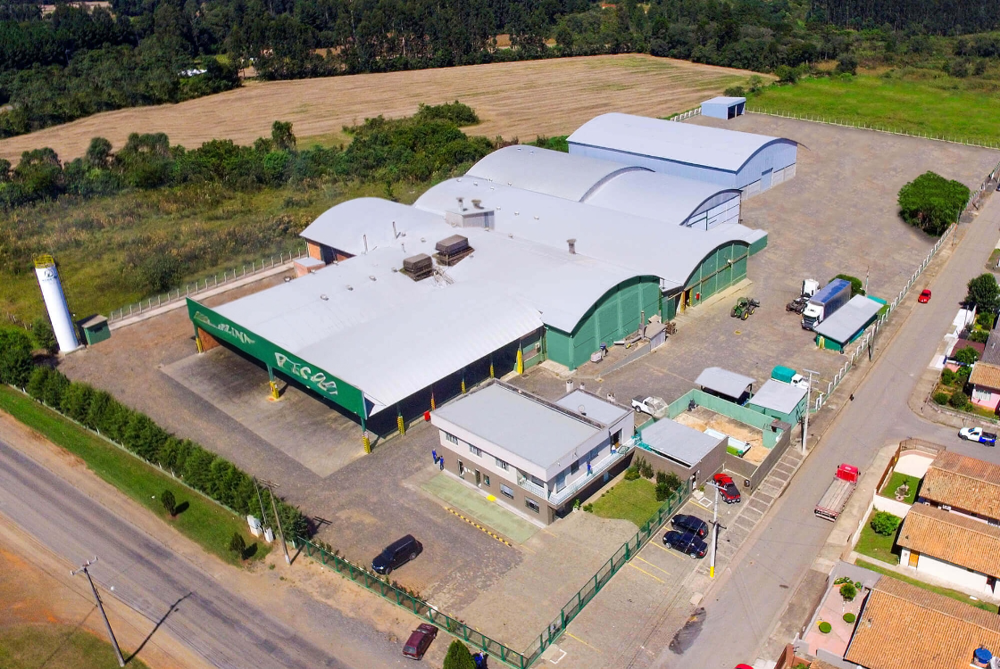

A erva-mate (Ilex paraguariensis) tem suas origens nas florestas subtropicais da América do Sul, especialmente nas regiões que hoje compreendem o Paraguai, o sul do Brasil e o nordeste da Argentina. Inicialmente, foi utilizada pelos povos indígenas guaranis e quíchuas, que a consumiam em rituais e como bebida diária. Durante o período colonial, os jesuítas reconheceram seu potencial econômico e começaram a cultivar a planta sistematicamente em suas missões no século XVII, introduzindo técnicas agrícolas que permitiram a expansão do seu cultivo. A partir do século XIX, a erva-mate se consolidou como uma importante cultura comercial, com o desenvolvimento de métodos de processamento e secagem, tornando-se um produto de exportação significativo, especialmente no Brasil e na Argentina.
A erva-mate possui grande importância cultural e social na América do Sul. No Brasil, especialmente na região Sul, o chimarrão é uma tradição profundamente enraizada, simbolizando hospitalidade e amizade. Na Argentina e no Uruguai, o mate é consumido diariamente, sendo um símbolo de identidade nacional. Além de seu valor cultural, a erva-mate também é apreciada por suas propriedades nutricionais e benefícios à saúde, incluindo ação antioxidante, energizante e seu auxílio na digestão. A indústria da erva-mate também contribui significativamente para a economia regional, gerando empregos e promovendo práticas agrícolas sustentáveis.
Caminho
A jornada da erva-mate desde sua colheita até a casa das pessoas envolve várias etapas cuidadosas. Após ser colhida das plantações, as folhas são transportadas através de caminhões até as ervateiras, empresas especializadas no tratamento da erva-mate, local onde são secas e muitas vezes trituradas para garantir a consistência desejada. Em seguida, passam por um processo de seleção rigoroso para garantir a qualidade final do produto. Uma vez preparada, a erva-mate é embalada e enviada para distribuidores e varejistas ao longo do país, que a disponibilizam para os consumidores através dos diversos estabelecimentos.

Empresas
As ervateiras são as empresas especializadas na manufatura da erva-mate, responsáveis por transformar as folhas colhidas em um produto final pronto para consumo. O processo nas ervateiras geralmente começa com a recepção das folhas frescas, que são então secas cuidadosamente para preservar suas propriedades e aromas. Em seguida, essas folhas são trituradas em diferentes granulometrias, dependendo do tipo de produto final desejado: desde a erva-mate mais fina para o chimarrão até a erva-mate mais grossa para o tereré. Durante esse processo, algumas ervateiras podem adicionar outros ingredientes, como menta ou limão, para criar blends específicos. Após a trituração e eventual mistura, a erva-mate é então embalada em pacotes que variam em tamanho e formato, prontos para serem distribuídos para o mercado. As ervateiras também garantem o controle de qualidade ao longo de todo o processo, assegurando que o produto final atenda aos padrões de sabor e pureza esperados pelos consumidores.
História
A história da erva-mate remonta aos povos indígenas guaranis, que habitavam as regiões subtropicais da América do Sul onde a erva-mate é nativa, como Brasil, Paraguai e Argentina. Os guaranis descobriram as propriedades revigorantes e medicinais da erva-mate há séculos, utilizando-a em rituais e como remédio natural. Com a chegada dos colonizadores europeus, a erva-mate ganhou popularidade e se tornou uma importante mercadoria na região sul da América do Sul. No século XIX, com o advento das técnicas modernas de cultivo e processamento, a produção de erva-mate foi industrializada, facilitando sua distribuição e consumo em larga escala. Hoje, a erva-mate é consumida não apenas como bebida tradicional, como o chimarrão e o tereré, mas também é valorizada por suas propriedades antioxidantes e energéticas, sendo exportada para diversos países ao redor do mundo.